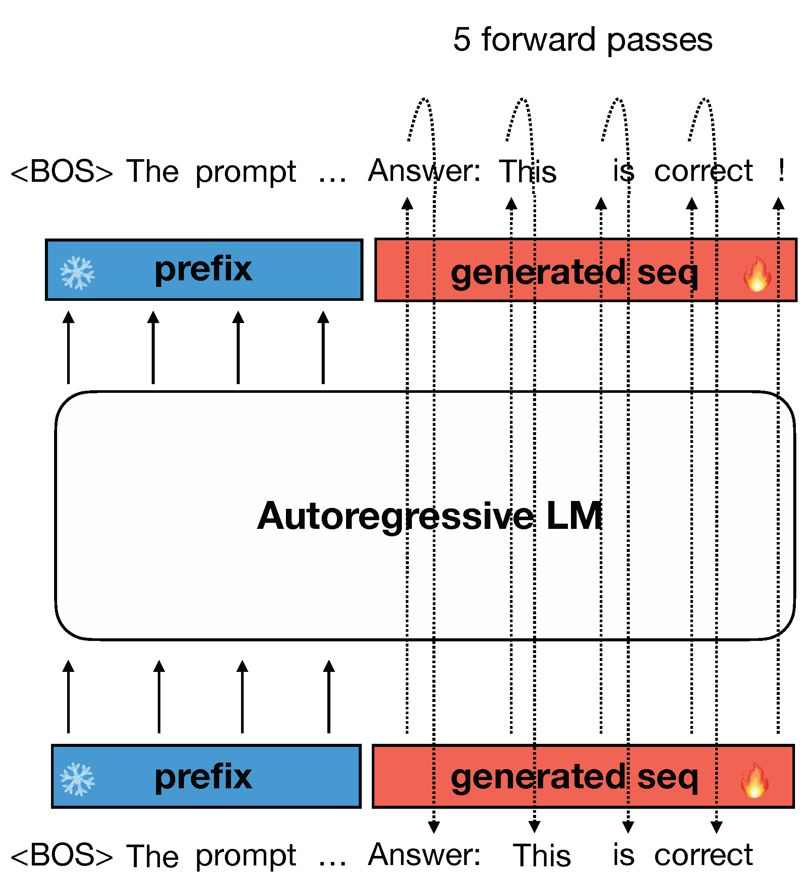
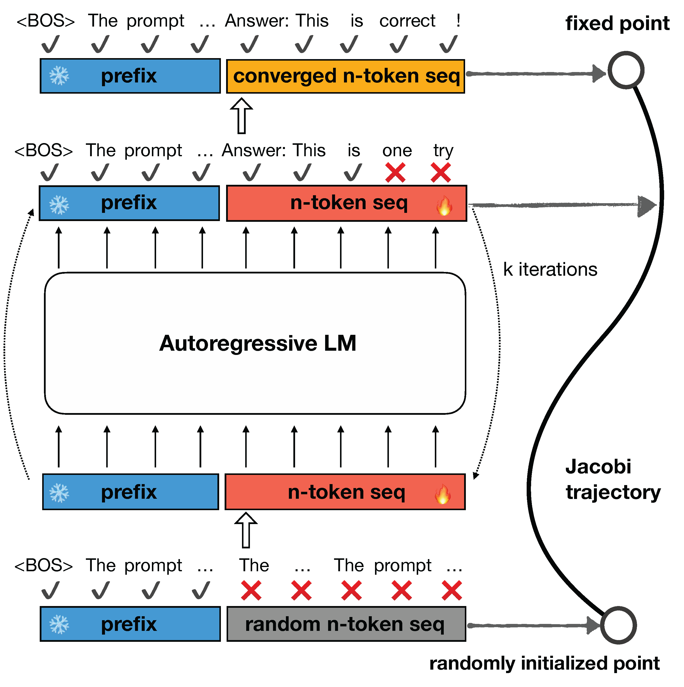
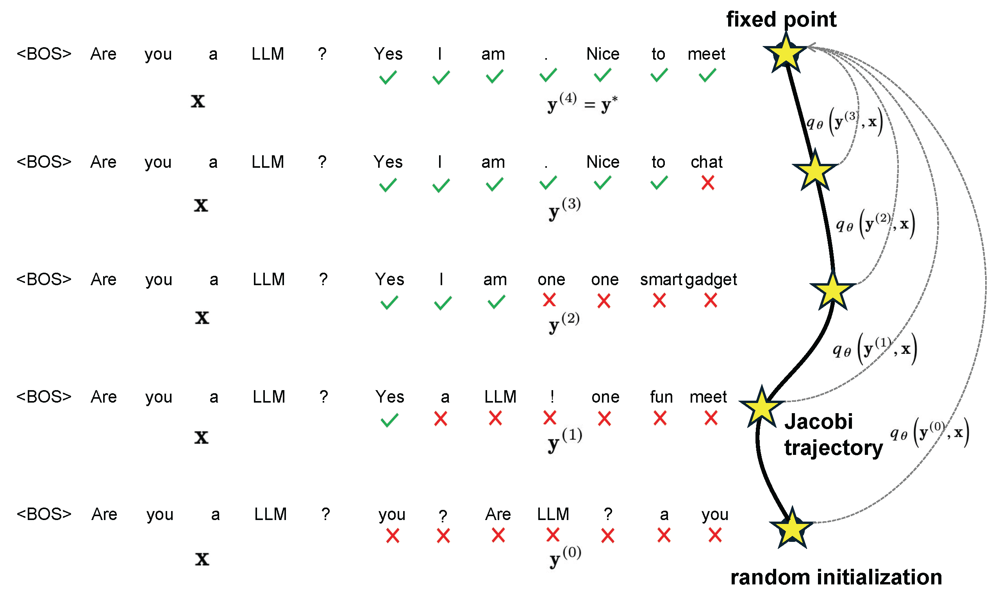
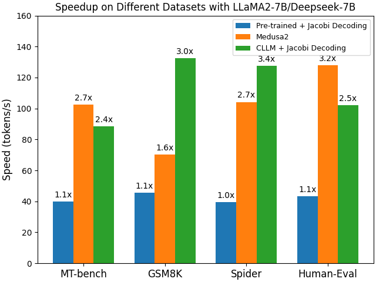
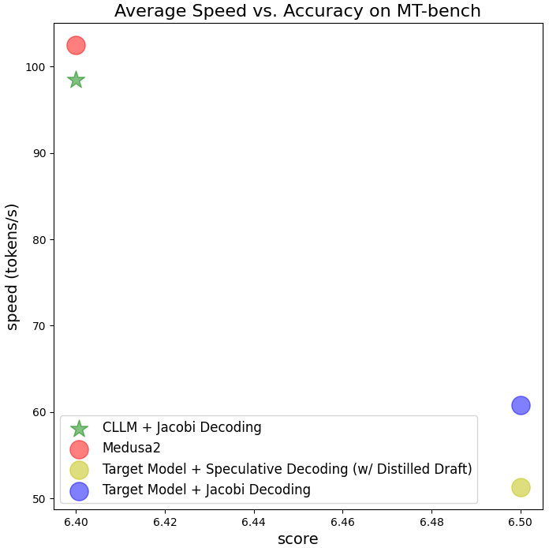
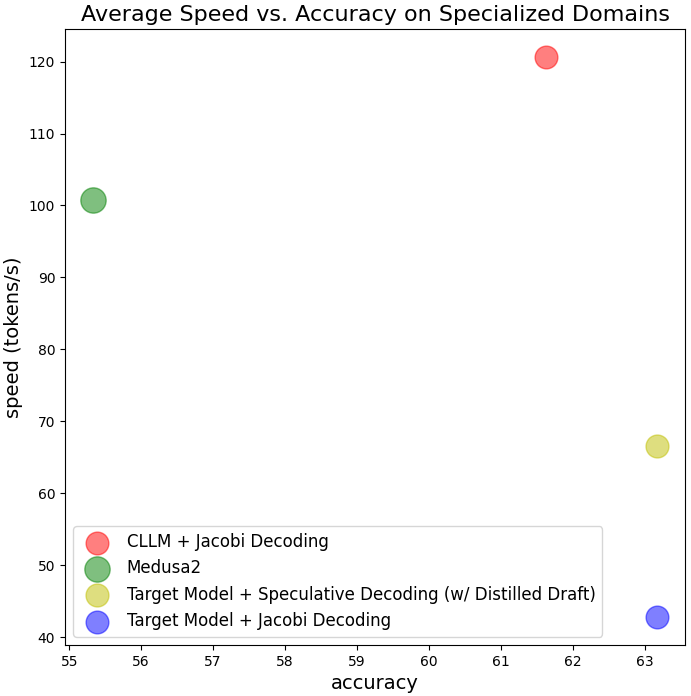
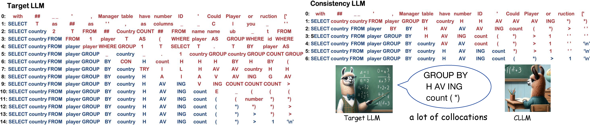

Consistency Large Language Models: A Family of Efficient Parallel Decoders
February 21, 2024 · 10 min · Siqi Kou*, Lanxiang Hu*, Zhezhi He, Zhijie Deng, Hao Zhang
An instance of Jacobi trajectory and an illustration of the global consistency loss learning objective.
TL;DR: LLMs have been traditionally regarded as sequential decoders, decoding one token after another. In this blog, we show LLMs can be taught to operate as efficient parallels decoders. We introduce Consistency Large Language Models (CLLMs), a new family of paralel decoders capable of reducing inference latency by efficiently decoding a $n$-token sequence in parallel. Our research shows this process can be effectively learned by pre-trained LLMs, mimicing human cognitive process of forming complete sentences in mind, before articulating word by word. CLLMs are trained with the objective of performing parallel decoding fast and reliably. Specifically, the training objective intends to empower CLLMs with the capability of efficient parallel decoding by mapping any randomly initialized $n$-token sequence to the same result as auto-regressive (AR) decoding in as few steps as possible. This parallel decoding method we employ is called Jacobi decoding. Experiment results show CLLMs obtained using our proposed method are highly effective, showing $2.4\times$ to $3.4\times$ improvements in generation speed while preserving generation quality in comparison with the pre-trained baselines. In comparison with other SOTA techniques like Medusa2 and Eagle, CLLMs achieve comparable or even better speedup in some tasks with no extra cost and engineering efforts for adaptation, as they require no modifications to the existing model architecture or auxiliary model components.
Figure 1: Demo of speedup by CLLM-ABEL-7B-001 in comparison with baseline ABEL-7B-001 using Jacobi decoding on GSM8K.
Large language models (LLMs) are transforming the landscape of human lives, from programming to offering legal and health advice. However, during inference, LLMs generate responses token by token using AR decoding as shown in Figure 1, leading to high latency for longer responses. Using AR decoding, it often necessitates architectural modifications, auxiliary components, or draft models, to speed up inference by generating more than one token at a time.

Figure 2: illustration of conventional AR decoding: one token is generated at a time.
Jacobi decoding originates from the Jacobi and Gauss-Seidel fixed-point iteration for solving nonlinear equations, and is proven identical to AR generation using greedy decoding. Jacobi decoding reformulates the sequential generation process into a system of $n$ non-linear equations with $n$ variables solvable in parallel based on Jacobi iteration. Each iteration step might predict more than one correct token (By correctness, we mean alignment with the AR decoding
result under a greedy sampling strategy), thereby accelerating AR decoding potentially.

Figure 3: illustration of Jacobi decoding: $n$-token sequence is fed into the LLM and iterates until convergence.
To be specific, Jacobi decoding method first randomly guesses the next $n$ tokens in a sequence (referred to as $n$-token sequence hereinafter unless specified otherwise) from an input prompt. The $n$-token sequence, along with the prompt, is then fed to the LLM to iteratively update itself. This process continues until the $n$-token sequence stabilizes and no further changes occur, reaching a fixed point. Notably, Jacobi decoding requires no more queries to the LLM than auto-regressive (AR) decoding. Eventually, the $n$-token sequence converges to the output that would be generated by AR decoding under a greedy strategy. This progression from an initial random guess to the final AR generation outcome traces what is known as a Jacobi trajectory. An instance of Jacobi decoding iteration process and Jacobi trajectory is illustrated in Figure 2.
However, vanilla Jacobi decoding for LLMs shows only marginal speedup over AR decoding in practice, e.g., an average of $1.05\times$ speedup. This is because an AR-trained LLM can rarely yield a correct token when there are incorrections in its preceding tokens. Thereby, most Jacobi iterations gain only one correction for the $n$-token sequence, resulting in a longer trajectory as illustrated on the left side of Figure 6.
Given a prompt $\mathbf x$ and a pre-trained LLM $p(\cdot| \mathbf x)$, LLM typically generates with the standard AR decoding method under the greedy strategy, i.e.
Jacobi decoding re-frames the LLM inference process as solving a system of nonlinear equations to transform the decoding process into a parallelizable computation. Consider, $f(y_i, \mathbf y_{:i}, \mathbf x):= y_i- \underset{y}{\text{arg max }} p(y | \mathbf y_{:i}, \mathbf x)$, we can rewrite the above equation as a system of nonlinear equations:
Note that The iteration exits at some k such that $\mathbf y^{(k)} = \mathbf y^{(k−1)}$ and we define $\mathbf y^{∗} := \mathbf y^{(k)}$ as the fixed point, and $\mathcal J := \set{ \mathbf y^{(1)}, \dots, \mathbf y^{(k)} }$ as the Jacobi trajectory.
To address this, we propose adapting pre-trained LLMs so that they can consistently map any point $\mathbf y$ on the Jacobi trajectory $\mathcal{J}$ to the fixed point $\mathbf y^*$. Surprisingly, we find such an objective is analogous to that of consistency models, a leading acceleration approach for diffusion models. In our proposed method, we use Jacobi trajectories collected from a target model to train the model with a loss that encourages single-step convergence during Jacobi iterations. For each target model $p$ to be adapted as a CLLM, the training consists of two parts:
Jacobi trajectory preparation: for each prompt, we sequentially perform Jacobi decoding for every truncation of $n$ tokens until the entire response sequence $\mathbf l$ has been generated, which amounts to a concatenation of all consecutive fixed points. Each sequence generated along a trajectory counts as one data entry. Note that for a lengthy response $\mathbf l$ of $N$ ($N ≫ n$) tokens, such truncation avoids slow model evaluation on lengthy input.
Training with consistency and AR loss: we jointly optimize two losses for tuning CLLMs, the consistency loss guarantees the prediction of multiple tokens at once and the AR loss prevents the CLLM from deviating from the target LLM so as to maintain generation quality.

Figure 4: an illustration of consistency training for one-step convergence: refining the target LLM to consistently predict the fixed point given any state along Jacobi trajectory as input.
Let $p$ denote the target LLM. Let $q_\theta(\cdot| \mathbf x)$ denote the CLLM with parameters $\theta$ initialized with those of $p$. For a prompt $\mathbf x$ and the corresponding Jacobi trajectory $\mathcal{J}$, let $\mathbf y$ and $\mathbf y^*$ denote a random state and the fixed point on the trajectory respectively.
We can encourage CLLM to output $\mathbf y^*$ with $\mathbf y$ as the input by minimizing the following loss, termed as the global consistency (GC) loss:
where $\theta^{-} = \text{stopgrad}(\theta)$ and we abuse notations to represent uniform sampling from the dataset, and we abuse notations to represent uniform sampling from the dataset. $D(\cdot||\cdot)$ denotes the distance between two distributions, choices are discussed in the GKD method and in this paper we primarily experiment with the forward KL.
Alternatively, local consistency (LC) loss following the formulation in consistency models, where the adjacent states $(\mathbf y^{(j)}, \mathbf y^{(j+1)})$ in a Jacobi trajectory $\mathcal{J}$ are driven to yield the same outputs:
To avoid deviating from the distribution of the target LLM, we incorporate the traditional AR loss based on the generation $\mathbf l$ of the target LLM $p$:
Our experiments contain three domain-specific tasks, including Spider (text-to-SQL), Human-Eval (Python code completion), and GSM8k (math), and the broader open-domain conversational challenge, MT-bench. Reported experiments were conducted using either fine-tuned coder LLM, Deepseek-coder-7B-instruct, LLaMA-2-7B or ABEL-7B-001 as the target model depending on the task. Both training and evaluation are carried out on NVIDIA A100 40GB servers.

Figure 5: CLLM speedup on different downstream tasks. CLLMs are significantly faster than pre-trained models and achieve comparable speedups in comparison with Medusa, yet with no extra cost at inference time.


Figure 6: illustration of CLLM vs. other baselines on domain-specific tasks (Spider, CodeSearchNet-Python, GSM8k), as well as on MT-bench. Note that the dot size is in proportion to memory consumption.
Specialized domains: From Figure 5, we can see that in comparison with other baselines including the original target model, Medusa2, and speculative decoding, CLLMs achieve the most significant speedup.
Open-domain conversational Challenge (MT-bench): CLLM trained from LLaMA2-7B using ShareGPT dataset can achieve roughly the same speedup as Medusa2 when combined with lookahead decoding, with comparable scores on MT-bench. However, CLLM offers higher adaptability and memory efficiency as it requires no modifications to the target model’s original architecture and no auxiliary components.
Training Cost:
The fine-tuning cost of CLLMs is moderate, e.g., passing only around 1M tokens for LLaMA-7B to achieve a $3.4\times$ speedup on the Spider dataset. In the cases where the dataset size is large, for example, for CodeSearchNet-Python, only 10% of the dataset is required to generate Jacobi trajectories in training CLLMs to obtain around $2.5\times$ speedup. The total number of tokens can be estimated by taking:
$N = \text{avg # of trajectories per prompt} \times \text{avg trajectory length} \times \text{# of prompts}$.

Figure 7: Comparison of Jacobi trajectory between a target LLM and CLLMs on Spider. Each point along the Jacobi trajectory is a color-coded sequence: blue for correct tokens matching with AR results, and red for inaccurate ones. CLLM demonstrates enhanced efficiency, converging to the fixed point $2\times$ faster the Target LLM. This increased efficiency in the CLLM can be attributed to the consistency loss which facilitates the learning of the structure of each $n$-token sequence given a prefix.
The left side of Figure 6 shows target LLMs typically generate only one correct token in one iteration. In contrast, in CLLMs, we identify fast forwarding phenomenon where multiple consecutive tokens are correctly predicted in a single Jacobi iteration.
Moreover, tokens correctly generated in advance (e.g. “country” and “H” at index 6 and 7 on the left side of Figure 6), are often replaced inaccurately in subsequent iterations in target LLMs. On the other hand, CLLMs exhibit the capability of predicting correct tokens preemptively, even with preceding incorrect tokens, while ensuring the tokens remain unchanged. We term such tokens as stationary tokens. Both phenomena contribute to the fast convergence in Jacobi decoding of CLLMs, thereby leading to a considerable generation speedup.
We observe that CLLMs acquire a crucial linguistic concept through training – collocations: a series of words or terms that co-occur more frequently than one would expect by random chance. Language is not solely composed of isolated words but also relies heavily on specific word pairings. Examples of collocations are abundant in both natural and coding languages. They include verb + preposition combinations (e.g., ‘’talk to’’, ‘‘remind … of …’’), verb + noun structures (e.g., ‘‘make a decision’’, ‘‘catch a cold’’), and many more domain-specific syntactical structures (e.g., ‘‘SELECT … FROM …’’, ‘‘if … else’’ for programming). The consistency generation objective allows CLLMs to infer such structures from any point in the Jacobi trajectory, encouraging CLLMs to acquire proficiency in numerous collocations and thereby predict multiple words simultaneously to minimize iteration steps.
@misc{kou2024cllms,
title={CLLMs: Consistency Large Language Models},
author={Siqi Kou and Lanxiang Hu and Zhezhi He and Zhijie Deng and Hao Zhang},
year={2024},
eprint={2403.00835},
archivePrefix={arXiv},
primaryClass={cs.CL}
}